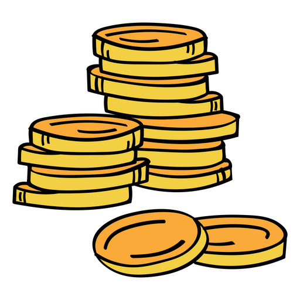
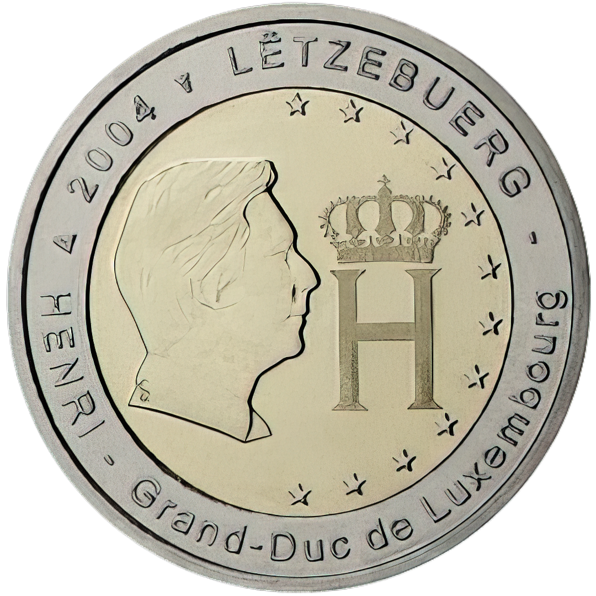

•
 | Página inicial | Sobre | Recursos ▾ | Turismo | Curiosidades | Contato |
|---|
Luxemburgo é uma força econômica discreta, mas poderosa na Europa. Seu sucesso se baseia em três
pilares principais: serviços financeiros, indústria siderúrgica e tecnologia. Como um importante centro
financeiro global, atrai investidores de todo o mundo devido à sua transparência e estabilidade. Além disso, sua
indústria siderúrgica continua a prosperar graças à inovação e eficiência. E o setor de tecnologia está em
ascensão, impulsionando uma vibrante comunidade de startups e empresas emergentes. Essa capacidade de se adaptar
e se reinventar mantém Luxemburgo como uma potência econômica, enraizada em sua história, mas com os olhos no
futuro.
Além disso, Luxemburgo utuliza como moeda nativa o Euro (€), como em muitos outros países da
União Europeia. Quanto às notas e moedas em circulação, as mesmas que são utilizadas em toda a zona do euro são
aceitas e utilizadas no país. As notas de euro estão disponíveis em denominações de €5, €10, €20, €50, €100,
€200 e €500, enquanto as moedas são emitidas em valores de 1, 2, 5, 10, 20 e 50 centavos, além de €1 e €2.